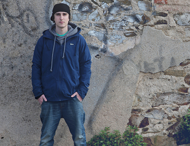

Mano a mano con Porta
“España está cambiando,
mucha gente está alzando los puños”

El rapero español Porta regresa a Buenos Aires para cerrar una nueva gira por
Argentina que incluyó presentaciones en Mendoza, Córdoba y Rosario.
La cita es el viernes 21 en el Luna Park donde se va a filmar un DVD del show. Porta tiene ya más de diez años en el rap, dos Luna Park encima, seis discos bajo el brazo y es una clara muestra del poder de difusión de las redes sociales. En esta charla nos contó cómo se lleva con la exposición, cuál es el rol de los jóvenes en el momento político actual español, cómo fue su época como jugador de handball y, como buen hincha del Barcelona y amante del fútbol, también habló de Messi.
-Vas a filmar un DVD en tu presentación en el Luna Park, ¿Qué te llevó a hacerlo en Buenos Aires?
-La gente que me produce los conciertos me propuso grabar un DVD y obviamente no le cerré las puertas. Buenos Aires es una ciudad muy especial que siempre me ha dado mucho cariño, personalmente me ha aportado muchísimo porque es una de las ciudades donde fui poco a poco llenando distintas salas hasta llegar al Luna Park. Hay un cariño muy importante de los fans, desde irme a buscar al aeropuerto hasta estar apoyándome en el hotel y en todos lados. Entonces, ¿qué mejor sitio para grabar un DVD que el Luna Park? No me podía negar.
-¿Por qué crees que te escuchan pibes de un país que está a miles de kilómetros de distancia del tuyo y que son parte de una cultura distinta?
-El genero musical que yo hago, el rap, tiene la capacidad de tratar cualquier tema y no hay normas. Puedes hablar de lo que sea y yo hablo de mi aprendizaje, de cosas de mi vida, cosas que me gustan y otras que quiero denunciar. He pasado por muchas situaciones en mi adolescencia y en mi etapa de madurez y de crecimiento personal. Muchas etapas que están ahora atravesando tantísimos jóvenes. Igualmente, yo no busco educar, ni mucho menos, porque yo hago música, ese no es mi lugar.
-¿Qué es lo que se produce entonces?
-Creo que muchos jóvenes se pueden sentir aconsejados y apoyados con alguna de mis canciones y verse reflejados ellos mismos, como si estuviera escribiendo sobre sus vidas. Porque al fin y al cabo, todos pasamos por amor, desamor, problemas y un montón de cosas. Creo que el rap es un género muy cercano a todo esto y permite hablar de lo que sea. Siento que lo que nos une tanto es que me ven como uno más, como a ellos mismos. Siempre lo he dicho, no tengo nada especial, simplemente hago música. No soy más especial que una persona que está en su barrio trabajando de cualquier otra cosa. Creo entonces que la identificación está en que me ven como una persona muy accesible, muy cercana.
-¿Cómo te llevas con la exposición?
-Me llevo bastante bien. Internet y las redes sociales me han ayudado muchísimo. Sin las redes sociales yo no estaría donde estoy. Además las aprovecho para comunicarme con mis fans, saber qué les gusta y qué no. Claro que hay momentos que me gustaría que fueran parte de mi intimidad, pero cada día me es más difícil. A veces necesitas tranquilidad y preservar algo, pero es complicado. Igualmente ya me he acostumbrado. Cuando decidí hacer música sabía que esto podía llegar a pasar. Todo tiene sus pros y sus contras, yo no me puedo quejar porque puedo vivir de esto que es lo que me gusta.
-¿Te sentís la voz de la generación 2.0?
-No me siento la voz, porque voces hay muchas y con muchos buenos mensajes, por lo menos en el rap que es el género que yo conozco. La tecnología nos está ayudando mucho, tiene herramientas, las hemos tomado y las estamos utilizando a nuestro favor para que se nos escuche. Yo creo que cualquiera puede comunicar lo que quiera y puede ser la voz del pueblo o una de las tantas voces, porque no creo que haya solo una.
-¿Cuál es tu opinión sobre el momento político que atraviesa España y cuál crees que es el rol de los jóvenes?
-Creo que estamos consiguiendo algo muy bueno y es que la gente se está dando cuenta de que no debe quedarse en su casa conformándose con lo que hay. Sobre todo los jóvenes que al atravesar una situación económica difícil, deben trabajar mientras estudian y no pueden alquilar ni siquiera un piso ni tener para comer. Entonces se tienen que quedar en las casas de sus padres aún teniendo 30 o 40 años. Es una situación triste, pero creo que muchísima gente se está dando cuenta de las cosas y quiere un cambio. Por mi lado estoy animando y alentando a que la gente salga a la calle a protestar. Muchísima gente se queda en su casa pensando que no puede hacer nada, sin embargo si aportamos un granito de arena, más otro, más otro, al final hacemos una montaña. La cosa está cambiando, mucha gente está levantando la voz, alzando los puños y, tarde o temprano, vamos a lograr un cambio.
-¿Crees que en España la juventud ha comenzado a conquistar espacios que no le pertenecían o que los había perdido?
-Si, la juventud se está volviendo más consciente y eso es bueno. Si la gente se deja manipular, nos manejarán siempre. Pero si uno se revela, otro se revela y otro se revela. Estoy hablando de rebelión sin ningún tipo de violencia, de una manera pacífica. Sino los medios manipulan la situación diciendo que nuevamente son los violentos los que se movilizan. Somos gente que está buscando el cambio y lo estamos haciendo.
-¿Ves al arte y al rap como un factor determinante en esta lucha?
-Sí, yo lo transporto a mis canciones pero intento no pasarme tampoco. En el rap hay mucha denuncia política y eso hace que muchísimos artistas sean iguales. Yo hago denuncia social, pero creo que el rap tampoco es solo eso. Uno puede hacer una, dos, tres canciones de denuncia, pero no todas. Hay muchos otros temas a los que yo les canto, igualmente esta situación social se refleja en mi música.
-¿Qué artistas de la escena actual argentina te gustan?
-Emanero está creciendo mucho, tiene un rap muy potente y llega a muchísima gente joven y también no tan joven, tiene muchísima fuerza. También he tenido la oportunidad de conocer a los Purple House de Rosario y a Zetta Krome. Todo lo que he conocido hasta ahora del rap argentino me ha parecido muy bueno y me han tratado todos ellos muy bien.
-¿Cuáles han sido tus influencias, tanto dentro como fuera de la música?
-En el plano musical mi máxima influencia siempre ha sido Eminem. Me gusta mucho su fuerza, su manera de escribir y su estructura. Es un ejemplo a la hora de componer. También muchos artistas de rap español. Mis influencias han sido todas a nivel musical. Obviamente a nivel personal mi máxima influencia ha sido mi familia, mis padres y mi hermana me han respaldado en todo. A pesar de no haberme podido dar todo lo material, porque somos una familia de clase media, han hecho todo para que yo sea feliz. Me han apoyado siempre, tanto en el rap, como cuando jugaba balonmano (handball) en el Barcelona y en la selección catalana.
-¿Como fue que dejaste de jugar al handball?
-Yo jugaba en el Barcelona y realmente me demandaba mucho tiempo. Estaba estudiando en las escuela y también con la música y con todos los elementos del hip hop, no solo hacía rap. Me gustaba el tema del dj, del break dance y del grafiti. Y combinar los estudios, con el placer, con la música y el deporte se me hizo difícil así que con el paso del tiempo tuve que decidir. La vida son decisiones, así que tuve que dejar el balonmano, que me gustaba mucho. Muchos de mis amigos siguen jugando y lo hacen en la selección española. Pero no me puedo quejar porque con la música me ha ido muy bien. Siempre me gustó mucho el deporte, tanto el fútbol como el balonmano.
-¿A qué edad jugaste?
-Desde los nueve años hasta los quince. Debuté con la primera nacional del Barcelona y jugué en categoría cadete porque dejé antes de entrar a juveniles. Estuve en la selección catalana y hasta me convocaron a la selección española con la que concentré y entrené. Por más que era muy joven, era un orgullo estar ahí.
-¿Sos hincha del Barcelona?
-Si, por supuesto. Soy culé desde muy pequeño.
-Ya que mencionas al Barcelona, como argentino es inevitable preguntarte por Messi…
-Messi es un grande. Sé que en Argentina hay dos bandos: los que lo aman y los que lo odian. Lo que el ha hecho con mi club es impresionante. Es alguien que no conozco personalmente y que me encantaría conocer, mostrarle mi respeto y decirle: lo que tu haces no hay nadie que lo haga mejor. Para mí es el mejor del mundo y no te lo digo porque me estés haciendo la entrevista desde un medio argentino. Messi es especial, así como en el rap para mí el que despunta por sobre los demás es Eminem, en el fútbol el que despunta es Messi.